造星神
完整透明圖 ↗套用確認的平面 V2，保留原本六臂、分層浮游刃與骨架動畫。


背景大手
完整透明圖 ↗整理掌紋與手腕曲線，以少量金色細節呼應造星神。沿用原本 9 張切片。
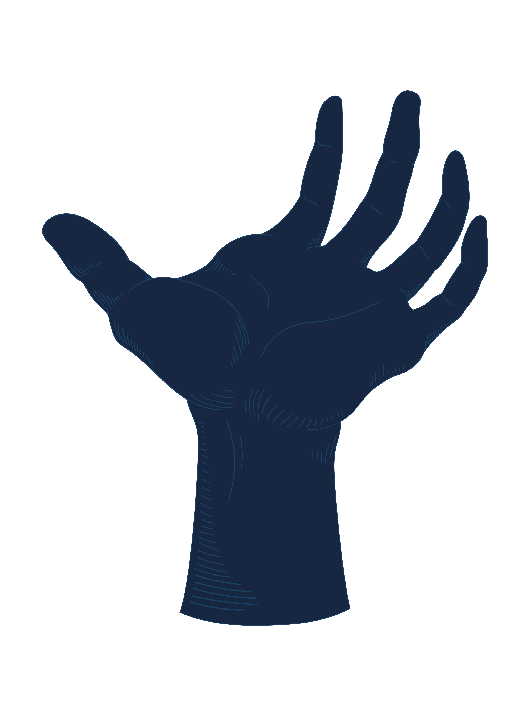
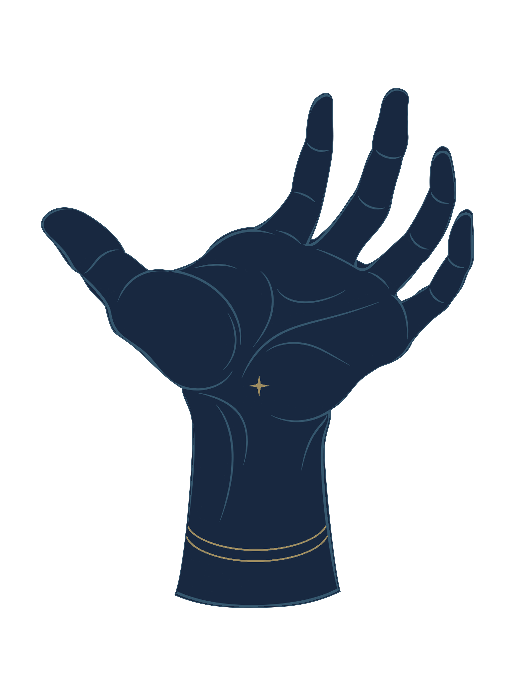
雲 1
完整透明圖 ↗以流動弧線取代零碎排線，保留原有輪廓與左右切片。
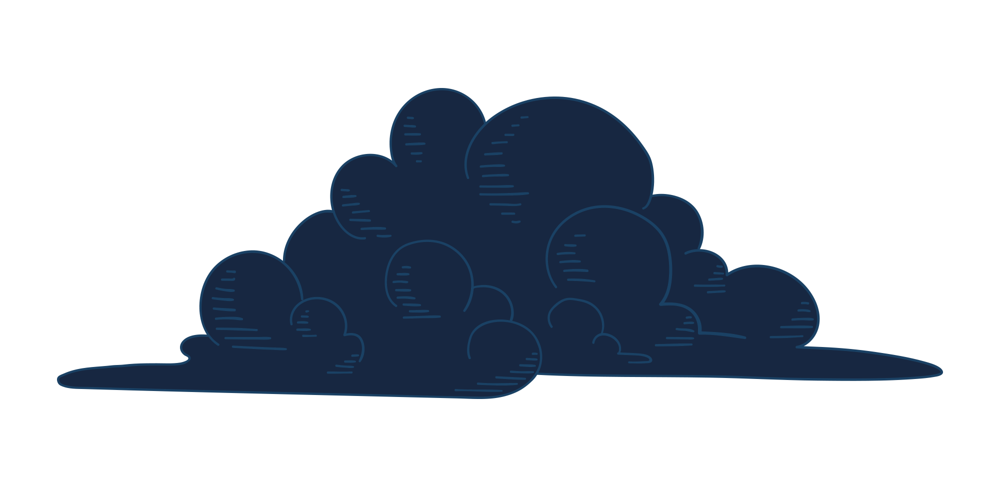
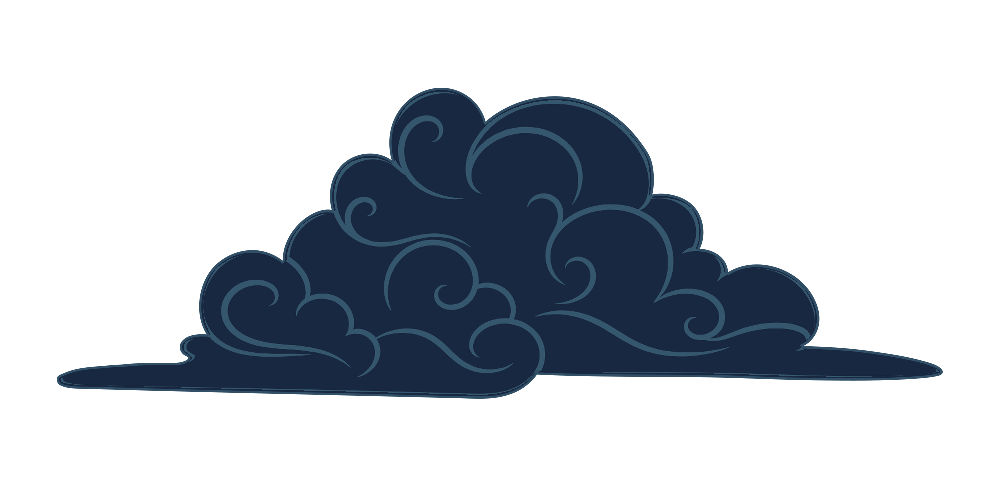
雲 2
完整透明圖 ↗以流動弧線取代零碎排線，保留原有輪廓與左右切片。
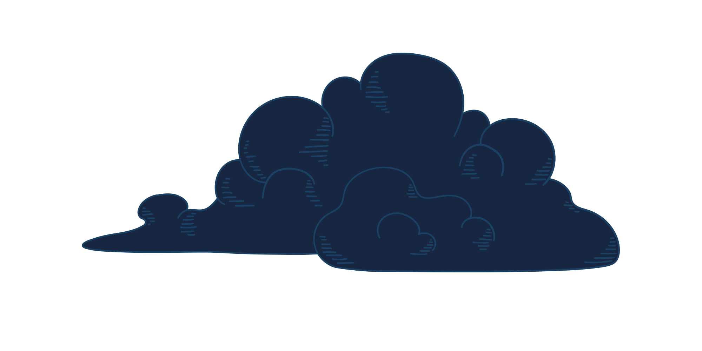
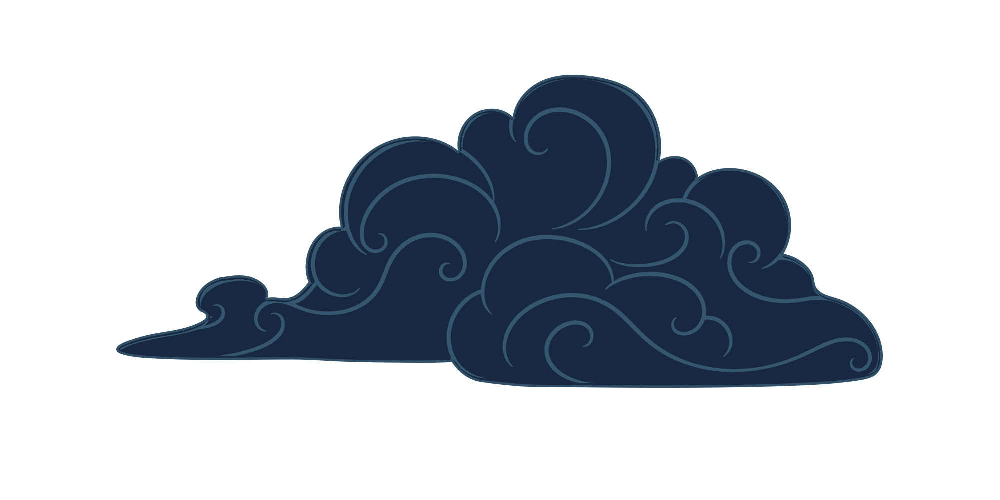
雲 3
完整透明圖 ↗以流動弧線取代零碎排線，保留原有輪廓與左右切片。
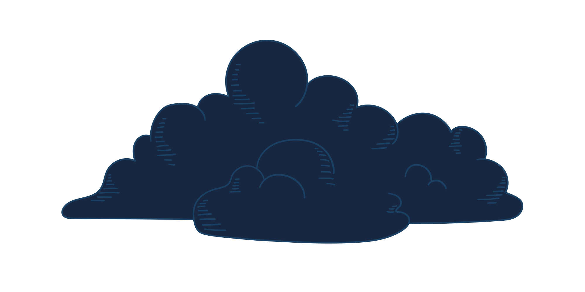
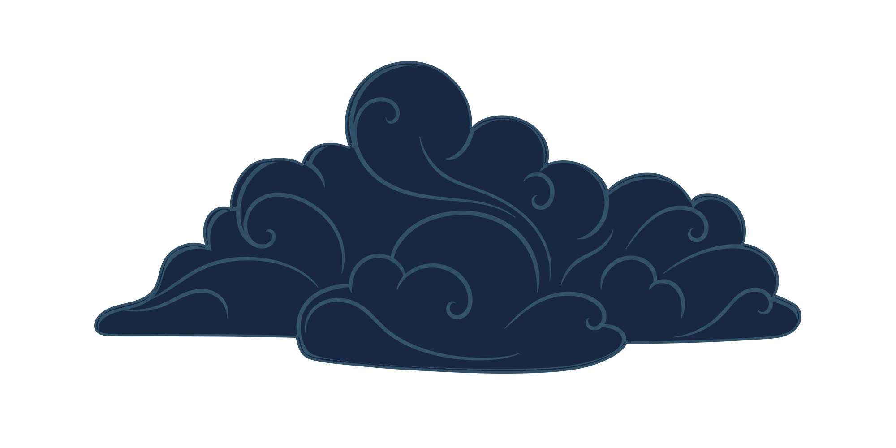
雲 4
完整透明圖 ↗以流動弧線取代零碎排線，保留原有輪廓與左右切片。
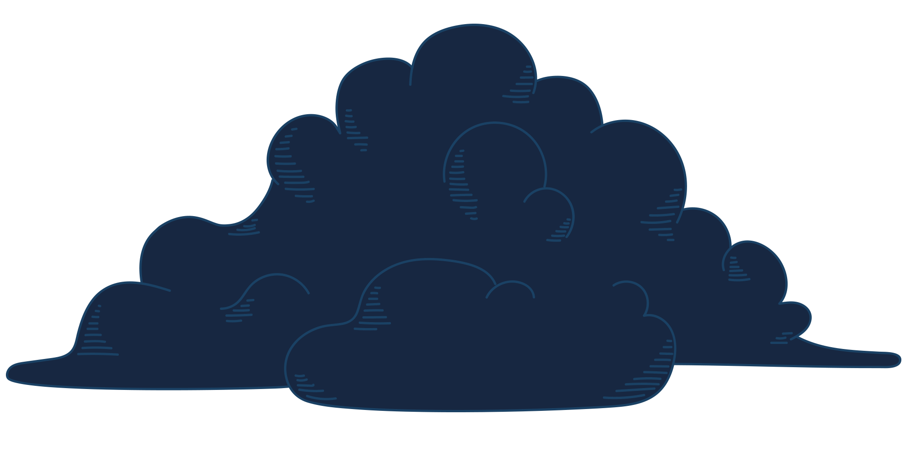
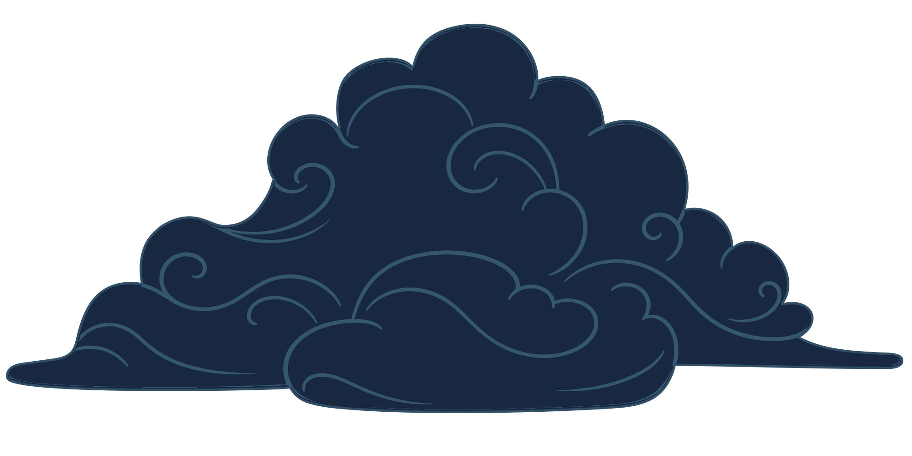
雲 5
完整透明圖 ↗以流動弧線取代零碎排線，保留原有輪廓與左右切片。
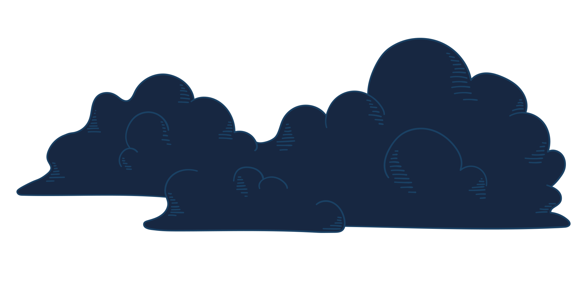
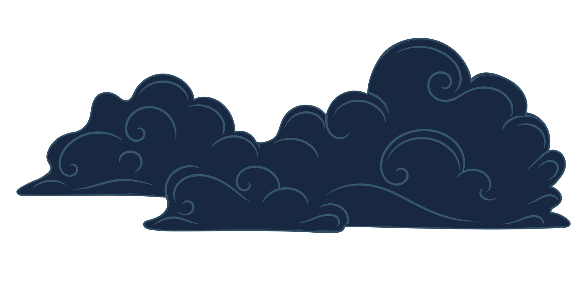
網頁版實際畫面
同一份 WebGL 建置的大廳與戰場截圖。
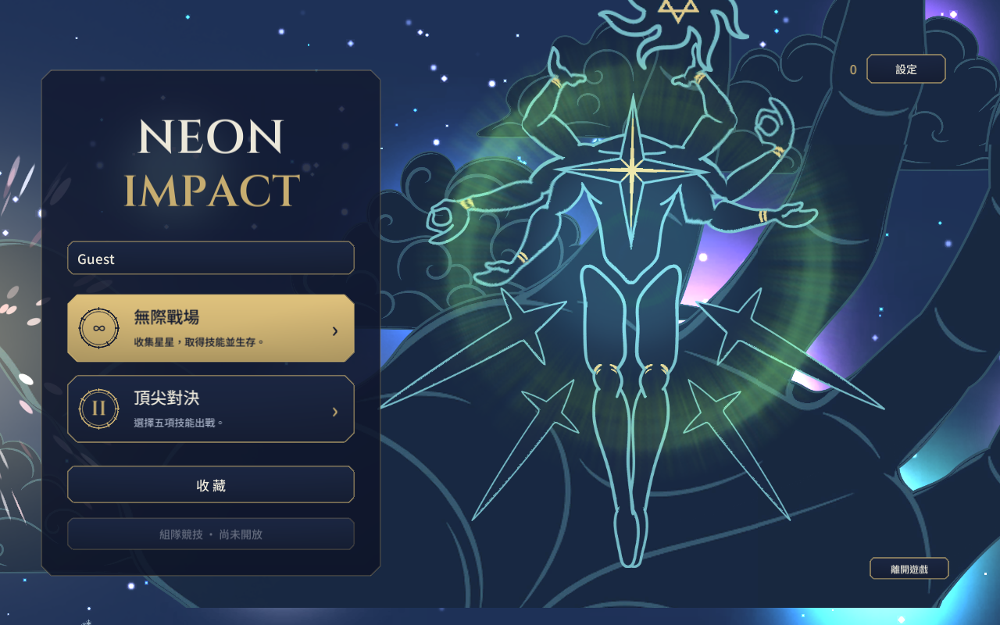
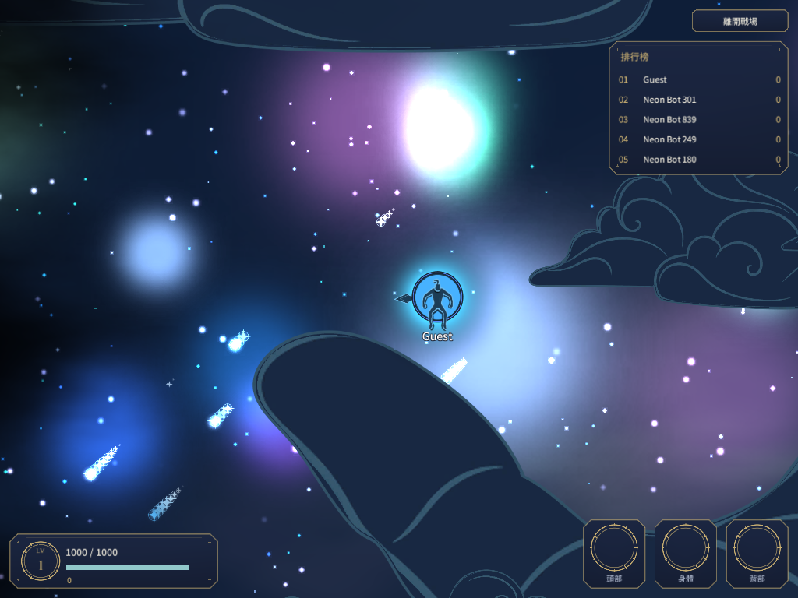
素材包：造星神 1 份分層 PSB、大手 9 張 PNG、雲 10 張 PNG，附原有 .meta。背景每張切片維持 1000 × 1000、原透明輪廓、PPU 與樞紐。
雙星開場、大廳流星、進場爆破與音樂時序沿用原版。查看本次驗證紀錄。